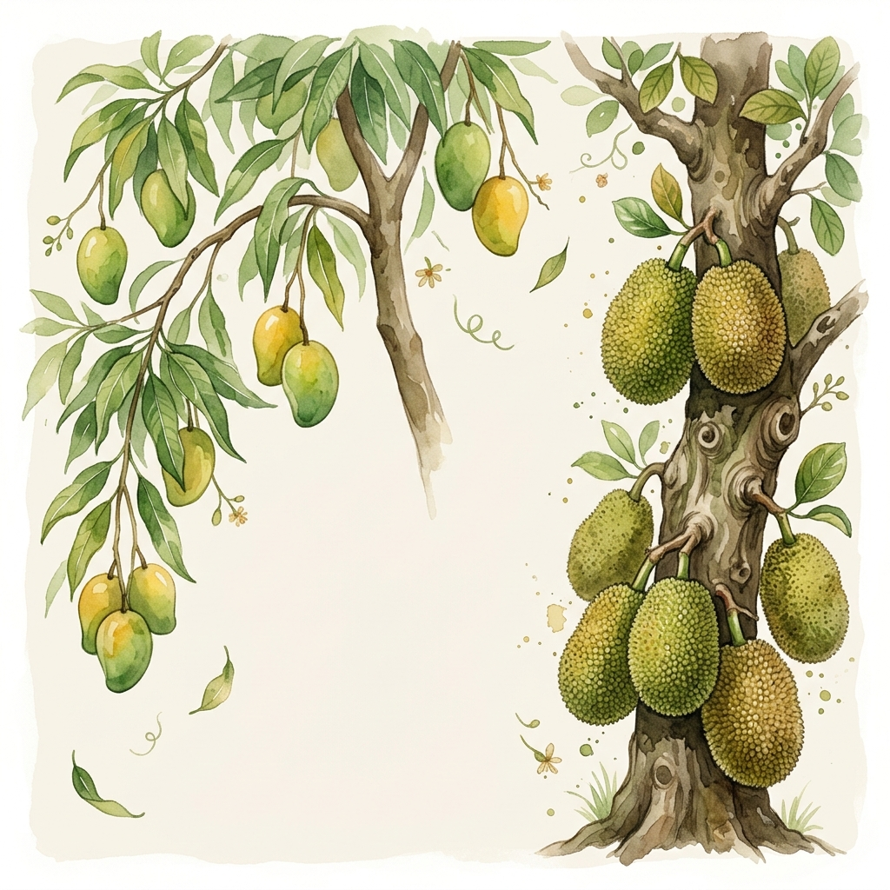

আমাদের বিদ্যালয়ের শিক্ষার্থীদের একটি স্বতঃস্ফূর্ত ও শিক্ষামূলক উদ্যোগ হলো ফল বাগান। এটি কেবল একটি প্রদর্শনী নয়, বরং আমাদের ঐতিহ্যবাহী ফলসমূহ নিয়ে আধুনিক বৈজ্ঞানিক জ্ঞান এবং শৈশব স্মৃতির একটি সুন্দর সেতুবন্ধন।
কিউআর কোড স্ক্যান করে দর্শনার্থীরা ফলের স্টলে দাঁড়িয়েই তার পুষ্টিগুণ, উৎপত্তি ও নানা শৈশব স্মৃতি জানতে পারবেন। এটি আমাদের বাংলার বৈচিত্র্যময় প্রকৃতিকে ডিজিটাল উপায়ে ভালোবাসার একটি প্রয়াস।

ষড়ঋতুর বাংলাদেশে কোন ঋতুতে কোন ফলের সমারোহ থাকে, তা একনজরে দেখে নিন।
মধু মাস নামে পরিচিত এই ঋতুতে রসালো ও সুমিষ্ট ফলের মেলা বসে।
বিভিন্ন পুষ্টি উপাদানে কোন ফলগুলো সবচেয়ে বেশি অবদান রাখে তা জানুন।
লিস্ট থেকে ফলের নাম সার্চ করে অথবা ক্যাটাগরি ফিল্টার করে বিস্তারিত বিবরণী দেখুন।
উপরে গ্যালারি থেকে যেকোনো ফলের কার্ডে ক্লিক করুন অথবা ফিজিক্যাল প্রদর্শনীতে থাকা QR কোডটি স্ক্যান করে বিস্তারিত জানুন।
প্রদর্শনীটি ঘুরে আপনি কতটুকু শিখলেন, তা যাচাই করুন!
বিদ্যালয়ের এই বিশেষ প্রদর্শনী সফল করতে উপদেষ্টা শিক্ষক ও শিক্ষার্থী সদস্যদের সমন্বিত প্রয়াস।